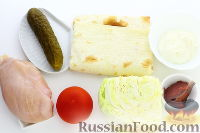
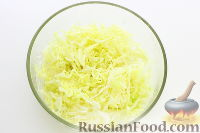
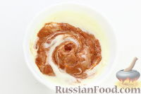
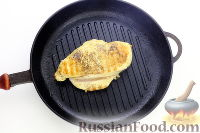
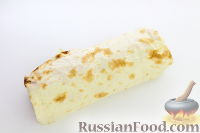

Если вы любите сытно и вкусно перекусить, тогда этот рецепт шаурмы с курицей и овощами вам обязательно придется по вкусу. Готовится шаурма (шаверма) в домашних условиях довольно быстро.
 Для приготовления шаурмы возьмите тонкий лаваш, куриное филе, консервированный огурец, свежий помидор, белокочанную капусту, кетчуп, майонез, соль, перец молотый, растительное масло.
 Как приготовить домашнюю шаурму с курицей и овощами: Капусту нарежьте тонкой соломкой. Слегка подсолите и перемешайте.
 В качестве соуса используйте майонез и кетчуп (можно томатную пасту) - перемешайте и приправьте молотым перцем.
 Куриное филе промойте, обсушите салфеткой и приправьте перцем и солью. Обжарьте филе на растительном масле на обычной или гриль-сковороде до готовности. Слегка остудите и нарежьте пластинками.
 Плотно заверните лаваш с начинкой рулетом так, чтобы боковые стороны были закрыты. Домашняя шаурма с курицей и овощами готова. По желанию рулет из лаваша (шаурму) можно обжарить на разогретой сухой сковороде до зарумянивания. Приятного аппетита!